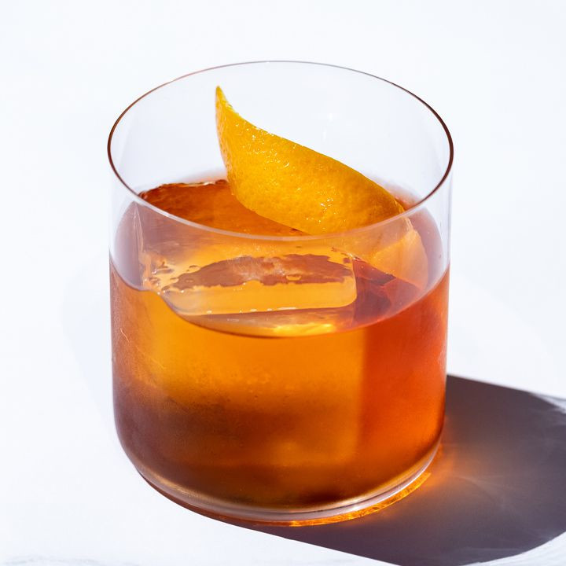

Description:
The key to a great negroni is finding a gin-vermouth pairing that complements. The negroni has been our signature drink for ages, its a timeless classic, with the velvety allure of sweet vermouth and the tantalizing bitterness of Campari, this symphony unfolds layers of taste, and, like a clue that brings it all together, we add citrusy note, a twist of orange peel.
Ingredients:
- 1 ounce gin
- 1 ounce Campari
- 1 ounce Sweet Vermouth
- Garnish: Orange peel
Steps:
- Add the gin, Campari and sweet vermouth to a mixing glass filled with ice.
- Stir it until well-chilled.
- Strain into a rock glass over a large ice cube.
- Garnish with a twist of orange peel.